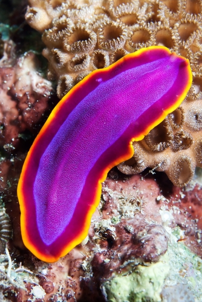
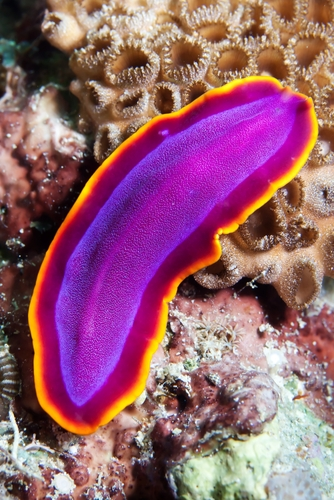
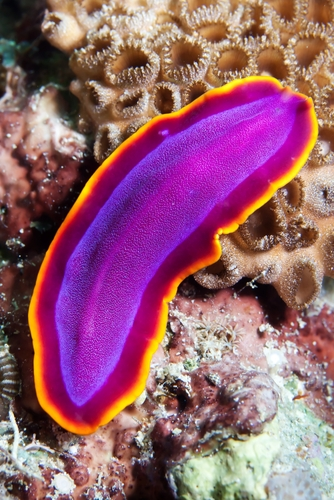

Os Platelmintos
 

Platelmintos são vermes do filo Platyhelminthes com corpo achatado e delgado. Muitas espécies são de vida livre, encontradas em ambientes aquáticos ou úmidos terrestres, enquanto outras são parasitas que se instalam em diversos hospedeiros.
Esses animais possuem três camadas embrionárias: ectoderme, mesoderme e endoderme. A presença do mesoderma possibilita o desenvolvimento de órgãos e sistemas, como o muscular, excretor e reprodutor. Na região da cabeça, observam-se estruturas sensoriais que auxiliam na interação com o ambiente.
O sistema digestivo é incompleto, com uma única abertura: a boca. Por ela, o alimento entra e os resíduos são eliminados. A digestão é, em parte, extracelular e intracelular.
Platelmintos apresentam reprodução sexuada e assexuada, a depender da espécie. Esse padrão também aparece em outros filos de vermes, como anelídeos e nematelmintos.
Planárias são platelmintos de vida livre, encontrados em ambientes aquáticos e locais terrestres úmidos. A Geoplana, por exemplo, pode alcançar até 20 cm e costuma ser confundida com lesmas. Elas se reproduzem de forma assexuada, por fissão. Quando crescem muito, fixam a parte anterior do corpo e se dividem em dois, originando novos indivíduos. Durante a alimentação, projetam a faringe para fora e iniciam a ingestão do alimento; os nutrientes são distribuídos por um intestino com ramificações.
Mapa MentalA tênia, conhecida como “solitária”, é um platelminto parasita do intestino humano. Pode atingir até 15 metros de comprimento. Sem sistema digestivo, absorve nutrientes já digeridos pelo hospedeiro através da superfície corporal. Seus proglotes grávidos são eliminados nas fezes, liberando ovos no ambiente. A Taenia saginata usa o boi como hospedeiro intermediário, enquanto a Taenia solium utiliza o porco. A ingestão de carne mal passada ou crua é a principal forma de contaminação. A Taenia solium é mais comum no Brasil. A cisticercose, causada pelas larvas, afeta tecidos humanos, mas é menos frequente.
Mapa MentalEssa classe de platelmintos inclui parasitas causadores da esquistossomose ou barriga d’água. Apresentam dimorfismo sexual e têm como hospedeiro definitivo o ser humano. O ciclo envolve caramujos do gênero Biomphalaria como hospedeiros intermediários. Os miracídios penetram nos caramujos e se transformam em cercárias, que posteriormente invadem o corpo humano pela pele. No corpo, os vermes adultos se alojam nos vasos sanguíneos e seus ovos são eliminados nas fezes. O acúmulo de ovos no fígado e o aumento da pressão nos vasos causam aumento do abdômen.
Mapa MentalMonogeneas são ectoparasitas encontrados principalmente em peixes e anfíbios, aderindo à pele, guelras, nadadeiras ou boca. Alguns podem ser encontrados na bexiga urinária de anfíbios ou até nos olhos de hipopótamos. Têm corpo achatado e medem de 30 μm a 6 mm, podendo chegar a 3 cm. Utilizam estruturas chamadas haptores, compostas por ganchos e ventosas, para fixação. Diferente dos trematódeos, completam seu ciclo de vida em um único hospedeiro, sem fases larvais em diferentes animais.
Mapa MentalOs platelmintos apresentam um sistema nervoso primitivo, mas eficaz. Dois gânglios cerebrais na cabeça se conectam a cordões nervosos longitudinais, interligados por nervos transversais. Esse arranjo proporciona respostas rápidas e coordenação dos movimentos. Algumas espécies, como
Os platelmintos, apesar de pequenos e muitas vezes invisíveis a olho nu, desempenham um papel fundamental na biodiversidade, atuando como decompositores, predadores e, em alguns casos, como parasitas. Sua importância se estende desde a reciclagem de nutrientes nos ecossistemas até o controle de populações de outros organismos, como mosquitos.
